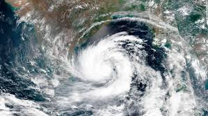
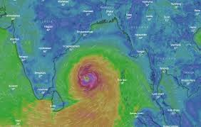

CURRENT DISASTERS IN INDIA
Natural disasters in India, many of them related to the climate of India, cause massive losses of life and property. Droughts,
flash floods, cyclones, avalanches,
landslides brought on by torrential rains, and snowstorms pose the greatest threats.
TELEGANA FLOODS
According to the India Meteorological Office (IMD), Ghatkesar received record rainfall of 322 mm from Tuesday night to Wednesday morning.
Hyderabad has last seen such heavy October rains after 129 years.
Hyderabad has set a record of wettest year in 2020 with 404% more than normal annual rainfall.
Authorities in Hyderabad declared a holiday on Thursday and asked residents to stay indoors. Daily life has been disrupted in Hyderabad as many parts of the city lost power in the flooding. Residents posted pictures on Twitter of floating cars, waterlogged homes, offices and streets.

CYCLONE AMPHAN
Super Cyclonic Storm Amphan (/ˈɑːmpɑːn/) was a powerful and deadly tropical cyclone that caused widespread damage in Eastern India, specifically West Bengal, and also Bangladesh in May 2020. It was the strongest tropical cyclone to strike the Ganges Delta since Sidr of the 2007 season and the first super cyclonic storm to have formed in the Bay of Bengal since the 1999 Odisha cyclone. It was also the fourth super cyclone that hit West Bengal since 1582, after 1737, 1833 and 1942, as well as being one of the strongest storm to impact the area.[1][2] It is currently tied with Harold and Haishen for the most intense tropical cyclone worldwide for 2020. Causing over US$13 billion of damage, Amphan is also the costliest cyclone ever recorded in the North Indian Ocean, surpassing the record held by Cyclone Nargis of 2008
On 18 May, at approximately 12:00 UTC, Amphan reached its peak intensity with 3-minute sustained wind speeds of 240 km/h (150 mph), 1-minute sustained wind speeds of 260 km/h (160 mph), and a minimum central barometric pressure of 920 mbar (27.17 inHg). The storm began an eyewall replacement cycle shortly after it reached its peak intensity, but the continued effects of dry air and wind shear disrupted this process and caused Amphan to gradually weaken as it paralleled the eastern coastline of India. On 20 May, between 10:00 and 11:00 UTC, the cyclone made landfall in West Bengal. At the time, the JTWC estimated Amphan's 1-minute sustained winds to be 155 km/h (100 mph). Amphan rapidly weakened once inland and dissipated shortly thereafter.
triggered heavy to very heavy rainfall in Ganjam, Gajapati and Puri districts of Odisha, while damage of hutments and asbestos-roofed houses, street lights, road blockade
due to uprooted trees were reported from Ganjam. Road communication between Paralakhemundi and Mohana and some other block headquarters in Gajapati had been
disrupted under the impact of the cyclone.

VISHAKAPATNAM GAS LEAK
The Visakhapatnam gas leak, also referred to as the Vizag gas leak, was an industrial accident that occurred at the LG Polymers chemical plant in the R. R. Venkatapuram village of the Gopalapatnam neighbourhood, located at the outskirts of Visakhapatnam, Andhra Pradesh, India, during the early morning of 7 May 2020. The resulting vapour cloud spread over a radius of around 3km (1.86 mi), affecting the nearby areas and villages. As per the National Disaster Response Force (NDRF), the death toll was 11, and more than 1,000 people became sick after being exposed to the gas.